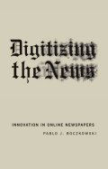

|  |
| About IR |
| Editors |
| Author instructions |
| Copyright |
| Author index |
| Subject index |
| Search |
| Reviews |
| Register |
| Home |
Boczkowski Pablo J. Digitizing the news: innovation in online newspapers. Cambridge, MA: The MIT Press, 2004. xi, 243 p. ISBN 0-262-02559-0. £19.95.
The number of electronic periodicals, including various types of newspapers, is growing daily. Electronic news appears on the Websites of news agencies, newspapers, governmental and business agencies, local municipalities, and other organisations. The number of interpretative studies of the digital environment and related human behaviour is also proliferating (one can only indicate the bigger projects headed by Voolgar or Fornas). In the reviewed book, Boczkowski has applied an organizational approach to the investigation of how the US newspapers use the emerging technological instruments to produce innovative products for their consumers. He is also interested in a reverse effect: how the adoption of the innovation transforms organizational practices and cultures. He explores these phenomena taking into account previous research within related areas and conducted in various countries, studying huge archival resources and reproducing an historical picture of the attempts to produce computerised news and, finally, focusing on the three cases of online news production by newspapers in the USA. The ethnographic method used for the case studies allows the author to evaluate the impact of different actors, artefacts and processes within the organisation on each other as well as their interactions.
The book includes seven chapters. The first (Emerging media) is an introduction discussing the rationale of the study, theoretical and methodological issues, and structure of the book. The second and the third chapters trace the attempts to introduce alternatives to printed news production in 1980s (like videotex or teletext) and 1990s (usage of the WWW opportunities). Three cases are presented in the chapters 4-6. The last chapter provides the summary of the findings. There is also an annex introducing the research design and methods, an extended part that includes notes to the chapters, bibliography, and index. The style is fluent and transparent. The author uses the names of the interviewees and actors of the case studies, provides the description of their competence and career. That makes the text more personal and intimate. However, it does not lose its scholarly character and is not an easy reading for a mass audience. On the contrary, it requires quite a high degree of concentration and serious background knowledge in the social sciences. In places, the abundance and meticulous description of details, names, and events even turns the text into a monotonous flow of words and drowns the essential ideas. Some technological details are provided in the notes and within the main text, but they are just sufficient to highlight the main research issues.
The author has successfully chosen three different case studies (New York Times Web's Technology section, Virtual Voyager of HoustonChronicle.com, and Community Connection of New Jersey Online), which highlight different approaches to the use of the innovative technology for the same purpose and subsequent different outcomes. Boczkowski shows how differently the organizational relations (between print and online newsrooms, between different categories of professionals - editors, journalists, technicians), and different images of users shape the application of technology and the online environment. The differences depended on the understanding of the process of gatekeeping and editing, the image of the more or less technologically-capable user, and the overall technical possibilities of the audience to access the content.
For me the most appealing aspect was the treatment of users and their involvement as co-authors and producers of the news. It would be most interesting to conduct similar studies in other information mediating agencies, like book publishers and vendors, libraries, magazine producers, and scholarly journals. On the other hand, it would also be fascinating to investigate if the same tendencies can be detected in other countries with different technology levels and media traditions.
Dr. Elena Macevičiūtė
Vilnius University and Högskolan i Borås
June, 2004
How to cite this review
Macevičiūtė, E. (2004). Review of: Boczkowski, Pablo J. Digitizing the news: innovation in online newspapers. Cambridge, MA: The MIT Press, 2004. Information Research, 9(4), review no. R140 [Available at: http://informationr.net/ir/reviews/revs140.html]